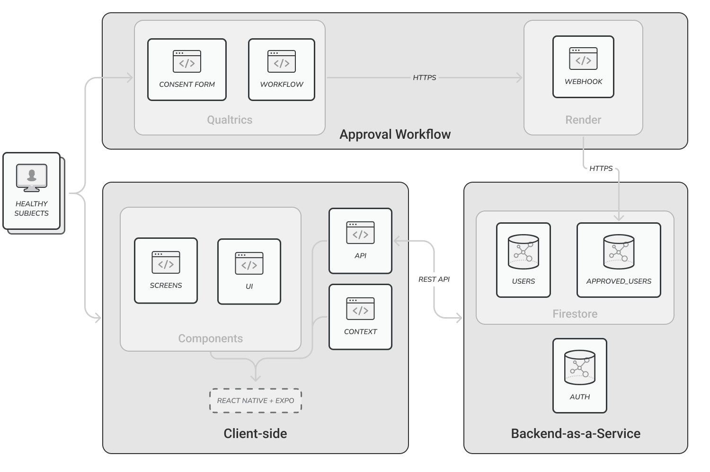

FlavorCharter
[ ABSTRACT ]
> FlavorCharter introduces a data-driven research framework composed of a mobile platform for crowd-sourced sensory data collection and an interactive visualization environment for exploratory analysis. This integrated system bridges data acquisition and visual reasoning, enabling both large-scale collection and interpretability of flavor perception data. This symptoms in a more precise, standardized language.

> Figure 1: System Overview
[ KEY CONTRIBUTIONS ]
- Designed and delivered FlavorCharter as an integrated, data-driven framework that bridges crowd-sourced sensory data collection and interactive visual reasoning, supporting large-scale acquisition while keeping flavor perception data interpretable.
- Developed the mobile data-collection platform to reliably capture structured taste-perception inputs at scale, with secure user flows and cloud persistence to enable consistent longitudinal and cross-user analysis.
- Built the interactive visualization environment for exploratory analysis, enabling comparison and interpretation of multivariate flavor profiles to help document taste loss and support a more precise, standardized way for patients to describe symptoms.
[ TECH STACK ]
- Mobile: React Native, Expo
- Web / Visualization: React, D3.js
- Backend / APIs: Node.js, Express, REST APIs
- Data / Auth: Firebase (Firestore, Authentication)
- Integrations / Hosting: Qualtrics, Render